| **Eucalipto Tratado** |
 |
Madeira de reflorestamento, resistente a pragas e intempéries. |
Construções, estruturas, decks e cercas. |
| **Madeira de Reúso** |
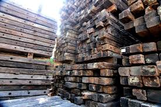 |
Material resgatado de demolições, com história e personalidade única. |
Móveis rústicos, acabamentos e decoração de interiores. |
| **Compensados Navais** |
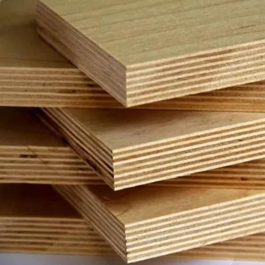 |
Material leve e de alta resistência à umidade e calor. |
Ambientes externos, construção de embarcações e móveis de banheiro. |
| **Deck Ecológico** |
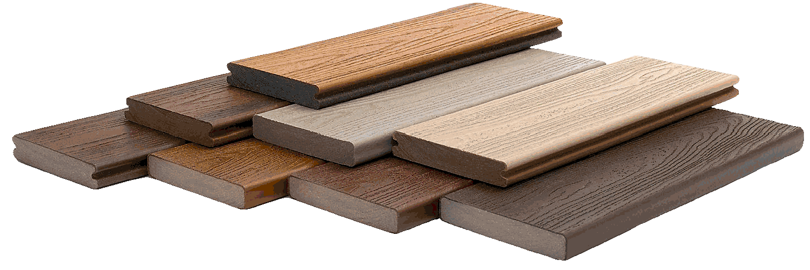 |
Opção prática e sustentável para ambientes ao ar livre. |
Pisos de piscinas, varandas e jardins. |
| **Treliças de Madeira** |
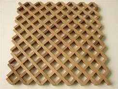 |
Estruturas versáteis e resistentes para projetos de paisagismo. |
Pergolados, jardins verticais e suportes para plantas. |
| **Vigas de Madeira** |
 |
Estruturas maciças ideais para sustentação em projetos de grande porte. |
Telhados, mezaninos e elementos estruturais. |
| **Pranchas de Pinus** |
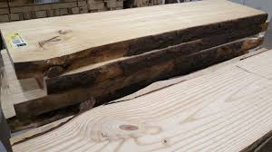 |
Madeira leve e fácil de trabalhar, com custo acessível. |
Prateleiras, móveis planejados e artesanato. |
| **Mourões de Eucalipto** |
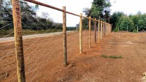 |
Madeira tratada para resistir ao contato com o solo. |
Cercas, currais e fundações para áreas rurais. |
| **Painéis de OSB** |
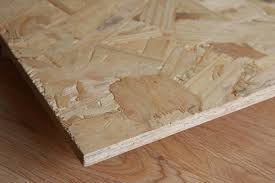 |
Placas de madeira versáteis, resistentes e com bom isolamento acústico. |
Forros, divisórias e fechamentos provisórios. |
| **Deck de Cumaru** |
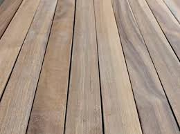 |
Madeira nobre e densa, com alta durabilidade e beleza natural. |
Pisos de alto tráfego, decks de piscina e áreas gourmet. |
| **Rodapés e Guarnições** |
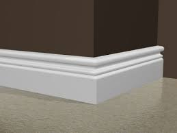 |
Acabamentos elegantes para portas e pisos. |
Decoração de interiores, arremates e molduras. |
| **Ripados de Madeira** |
 |
Material moderno para revestimento de paredes e painéis decorativos. |
Painéis de TV, divisórias e fachadas. |
| **Dormentes** |
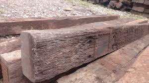 |
Peças robustas de madeira de lei, perfeitas para paisagismo. |
Degraus de jardim, caminhos e canteiros. |
| **Assoalhos de Madeira** |
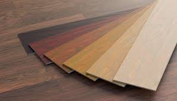 |
Tábuas de madeira de alta qualidade para pisos. |
Salas, quartos e ambientes que buscam conforto e sofisticação. |
| **Laminados de Bambu** |
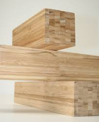 |
Opção ecológica com visual moderno e alta resistência. |
Pisos, painéis e móveis. |